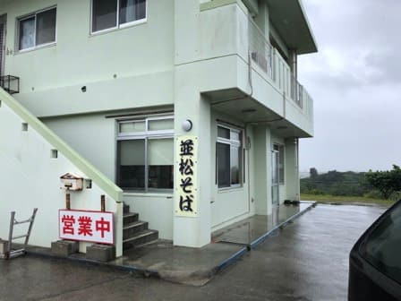
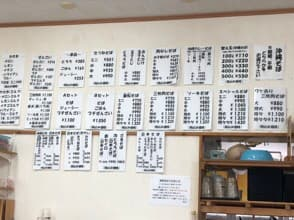
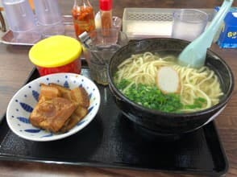

2023年5月吃的😊


點了與店名同名的「並松麵」。麵可以選細麵或平麵，問店員推薦，被推薦「細麵」，所以我選了細麵。尺寸也從迷你到特特大細分成7種，這次點了「中」尺寸😊

雖說是「中」尺寸，但我覺得在其他店大概是「大」的等級。份量相當不錯。這家店像拉麵店一樣也有「加麵」的選項，似乎可以以100g（110日圓）～500g（550日圓）的100g為單位點。（這次沒有加麵）
湯頭是漂亮清澈的顏色。邊想著「是鰹魚基底嗎？」邊喝了一口湯。感覺到不只有柴魚高湯，也有豬骨高湯，味道絕妙。就像前陣子吃的「阿和瀨麵食堂」一樣，鰹魚和豬都能嚐得到。
醬油基底的配料（三層肉、排骨），可能是為了不讓味道和顏色染到湯頭的透明色，所以是另盤提供😊
細麵的口感偏軟。三層肉、排骨也入味、軟嫩，連排骨的骨頭都很軟(・・) 骨頭這麼軟，應該是至今其他店都沒有過的。這就是燉得非常軟的證明呢😄
評分（9.5分/15分）：普通好吃。湯頭是清澈漂亮的湯，鰹魚和豬都能嚐到，味道很棒。
麵：★★★☆☆（3）
湯頭：★★★✬☆（3.5）
配料：★★★☆☆（3）